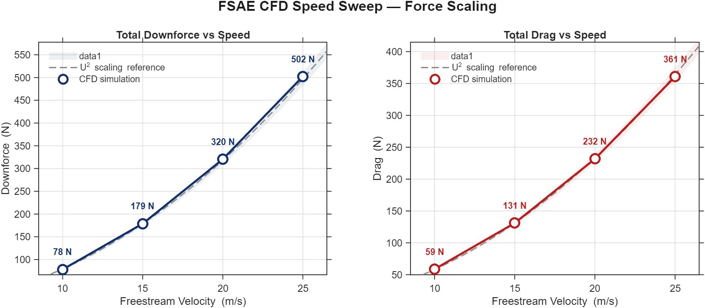
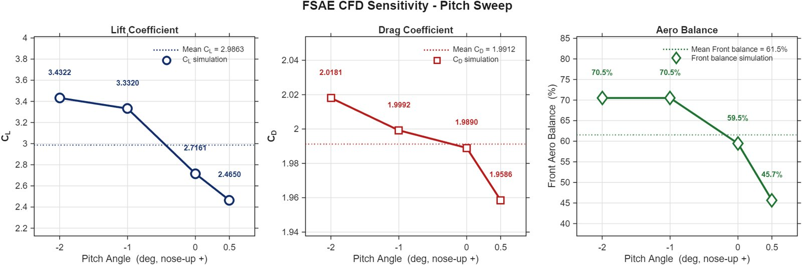

How the car behaves on track.
A car never sits at one attitude. The package was swept across speed, pitch, heave, yaw, and roll, and a dedicated rotating-frame skidpad case captured true cornering, building a sensitivity map the vehicle-dynamics group can interpolate.


Pitch is by far the strongest sensitivity: nose-down braking loads the front wing and the underbody hard, swinging the aerodynamic balance by more than 20 points across the usable range. That migration, balance is not a fixed number, is exactly the kind of result the vehicle-dynamics group has to design the car around. The speed sweep's Reynolds-independence result is also what makes the reduced-scale wind-tunnel comparison defensible later.
| Pitch | CL | CD | Front balance |
|---|---|---|---|
| −2° (braking) | 3.432 | 2.018 | 70.5% |
| −1° | 3.332 | 1.999 | 70.5% |
| 0° (baseline) | 2.716 | 1.989 | 59.5% |
| +0.5° (accel) | 2.465 | 1.959 | 45.7% |

The skidpad case is the payoff of the sensitivity work. Against a straight-line run at the same 10.4 m/s, cornering loses 38% of downforce (the car is effectively at local yaw), gains 6% drag, and shifts the balance 12 points forward to 71.5%, a migration that tends toward corner-entry understeer and feeds directly into the cornering grip budget. None of this appears in a symmetric straight-line simulation.
| Quantity | Straight line | Skidpad corner | Change |
|---|---|---|---|
| Total downforce | 84.8 N | 52.4 N | −38.2% |
| Total drag | 63.6 N | 67.6 N | +6.3% |
| Front balance | 59.5% | 71.5% | +12.0 pts fwd |